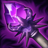
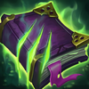

Tanque
/
Mago
Dificultad Moderada
HABILIDADES


PASIVA • GOLPE COLOSAL
Cada cierto tiempo, el siguiente ataque básico de Galio inflige daño mágico adicional en un área.
1 • VIENTOS DE GUERRA
Galio dispara dos ráfagas de viento que convergen en un gran tornado que inflige daño prolongado.
2 • ESCUDO DE DURAND
Galio carga una postura defensiva y se mueve lentamente. Al liberar la carga, Galio provocará y dañará a los enemigos cercanos.
3 • GOLPE JUSTICIERO
Galio retrocede brevemente y carga, lanzando al aire al primer campeón enemigo que encuentre.
DEFINITIVA • ENTRADA HEROICA
Galio señala la posición de un aliado como su punto de aterrizaje, lo que les concede a todos los aliados de la zona un escudo mágico. Tras un lapso, Galio golpea la ubicación y lanza por el aire a los enemigos cercanos.
CONFIGURACIÓN
OBJETOS
-

Vara de las Edades
2800+250 Vida Máxima
+60 Poder de Habilidad
+300 Maná Máximo
ETERNIDAD: Restaura maná igual al 15% del daño recibido de campeones. Gastar maná regenera Vida igual al 20% del costo de maná. Tiene un límite de 25 de Vida por cada lanzamiento.
VETERANO: Cada acumulación otorga 20 de Vida, 10 de Maná y 6 de Poder de Habilidad. Se acumula con una tasa de 1 cada 30 seg. Tiene un máx. de 10 acumulaciones y otorga 200 de Vida, 100 de Maná y 60 de Poder de Habilidad. -

Sombrero Mortífero de Rabadon
3500+120 Poder de Habilidad
DAÑO EXCESIVO: Aumenta el Poder de Habilidad en un 40%.
-

Báculo del Vacío
2800+70 Poder de Habilidad
DISOLVER: +40% de Penetración de Magia.
-

Morellonomicón
3000+300 Vida Máxima
+70 Poder de Habilidad
PREDICADOR DEL FIN: +15 de Penetración de Magia.
AFLICCIÓN: Infligir daño mágico aplica un 40% de Heridas Graves a campeones enemigos por 3 seg. Si el objetivo está por debajo del 50% de Vida, este efecto aumenta a un 60% de Heridas Graves.
Heridas Graves reduce la efectividad de las curaciones y efectos regenerativos. -

Orbe del Infinito
3150+200 Vida Máxima
+60 Poder de Habilidad
DESTINO: +5% de Velocidad de Movimiento.
BALANCE: +15% de Penetración de Magia.
MUERTE INEVITABLE: Las habilidades y los ataques potenciados infligen golpes críticos con un 20% de daño adicional contra enemigos por debajo del 35% de Vida. -

Botas Jonias de la Lucidez
1000CALZADO: +40 de Velocidad de Movimiento.
LUCIDEZ: +15 de Aceleración de Habilidad.
INVOCADO: Reduce los enfriamientos de hechizos un 15%.
CARRERA (ACTIVA): Aumenta la Velocidad de Movimiento un 15% durante 3 seg. Infligir o recibir daño de campeones desactiva los efectos de Carrera. (60 seg de enfriamiento). -

Encantamiento de Protocinturón
500PROTOCINTURÓN (ACTIVA): Te desplazas hacia adelante y liberas misiles en un cono que infligen 75-145 de daño mágico. Si más de un misil alcanza campeones o monstruos, los misiles adicionales solo infligen un 10% de daño. (60 seg de enfriamiento).
RUNAS Y HECHIZOS
-
Réplica
Tras inmovilizar a un campeón enemigo, obtienes resistencias y después infliges una ráfaga de daño mágico a tu alrededor.
RESISTENCIAS: 35 de Armadura + 60% adicional y 35 de Resistencia Mágica + 60% adicional durante 2.5 seg
DAÑO: 12-110 de daño mágico
ENFRIAMIENTO: 20 seg. -

Brutalidad
Obtienes 7 de Daño de Ataque y un 2% de Penetración de Armadura o 14 de Poder de Habilidad y un 2% de Penetración de Magia (adaptable).
-
Segundo Aire
Gana 5 de Vida cada 5 seg.
Después de recibir daño de un campeón enemigo, regenera 3(+1.5% de tu Vida faltante) a lo largo de los próximos 10 seg. Este efecto se duplica para campeones cuerpo a cuerpo. -

Dulces Frutos
Aumenta la curación de Frutamiel en un 25%. Cada vez que tú o un aliado cercano coma una Frutamiel, obtienes 20 de oro.
-

Barrera
ENFRIAMIENTO: 120 seg.
Obtienes un escudo que absorbe 115 de daño (115-465 basado en nivel) durante 2 seg. -

Destello
ENFRIAMIENTO: 150 seg.
Te teletransportas una distancia corta hacia delante o hacia la dirección objetivo.
CÓMO JUGAR GALIO
Galio es un campeón de potencia de habilidad en el carril central. Es un poco diferente de otros campeones originales de la línea central, ya que Galio es principalmente un tanque de primera línea, pero puede hacer mucho daño. Él es un campeón cuerpo a cuerpo y puede sufrir un poco al principio del juego cuando se trata de subir y últimos secuaces de golpe. Una vez que llegues al nivel 5 y obtengas Entrada Heróica (Definitiva), puedes buscar deambular por el mapa y usar la Definitiva para saltar a tu equipo para ayudarlos y cambiar el resultado de la pelea.
Galio también se puede jugar en el papel de soporte. Con el apoyo de Galio, querrás ir hacia una construcción más de tanques, ya que estarás en la primera línea en las peleas en equipo y querrás pelar para que tu anuncio se lleve para mantenerlos con vida.